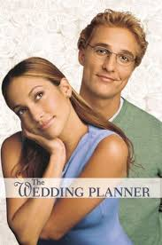

Weddings weddings weddings Horses: Horse racing was originally a sport in Europe,
where it has been around for millennia. However, it was
banned in England in the mid-19th century and Scotland in
the early 20th century in order to improve horse welfare.
It is a symbol of the hard work and dedication put into
all of our horses and we want to preserve it. Race:
The Scottish Race is an event designed to unite the
different regions of Scotland into one community for
the benefit of horse racing.
weddings weddings weddings Horse racing in south east England means a very
different experience each year. It’s a different animal.
Races may be shorter than in some European countries but,
like all sports, it’s a demanding sport that requires dedication,
hard work and dedication of a lot of hard work to be competitive.
Horse riders have to train to be the best, train and train and
every year they become better.
